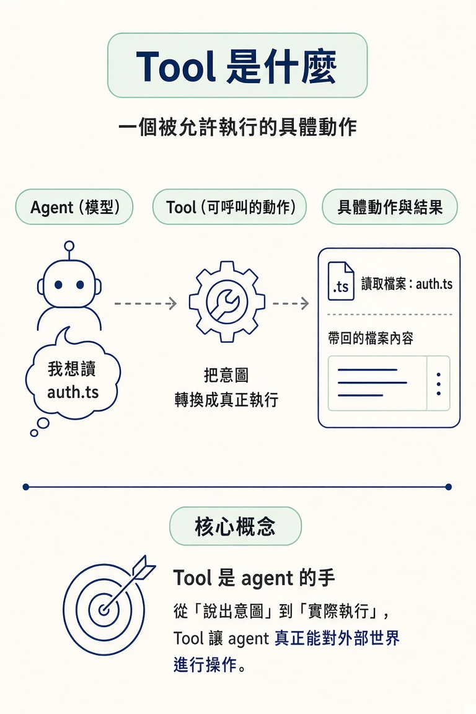
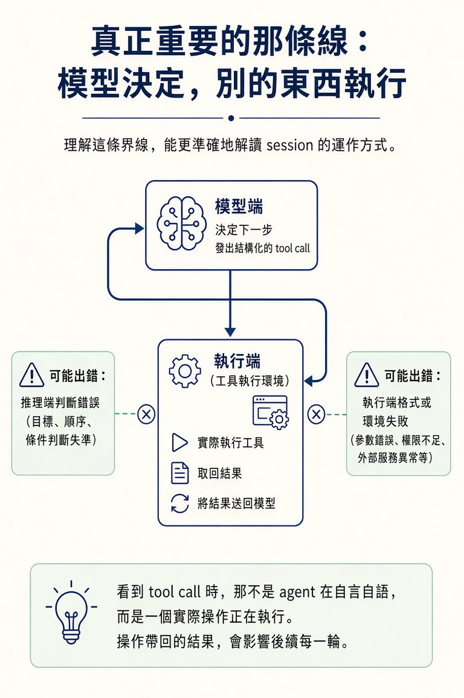

說得出 tool 是什麼、coding agent 常見的五個核心工具，以及「模型決定」和「工具執行」為什麼是兩回事；也說得出每一次 tool call 背後都有實際成本。
上一節介紹了四大原語，其中最容易在操作時看見的，就是 tools。幾乎每次開啟 session，你都會看到 agent 說「我先看一下 auth 相關的檔案」，接著畫面閃過一行操作，然後它就開始根據檔案內容回答。
那一行字底下究竟發生了什麼？很多人會以為是模型自己讀了檔案，好像它有雙眼睛，能直接翻開硬碟裡的資料。其實不是這樣。弄錯這一點，就容易把問題歸錯地方。這一節會說明 tool 是什麼，以及模型和工具各自在做什麼。
Tool 是 agent 被允許執行的一個具體、明確的動作。它不是一句建議，也不是「或許可以做某件事」這種描述；它會被真的觸發，然後帶回實際結果。
可以把 tool 想成函式或 API 呼叫：它有明確的用途，需要時被呼叫，接著回傳結果。像是 agent 呼叫 read("auth.ts")，取回檔案內容，就像函式回傳一個值。Tool 就像 agent 的手，讓它能從說出想法，跨到實際動作。
一個 chatbot 只會說話；一個 agent 能做事，是因為它有被允許使用的工具。這就是 chatbot 和 coding agent 的差別。
有些工具是內建的，例如讀取檔案或搜尋網頁；有些則可以之後再加。種類雖然不同，但共通點都一樣：它們是定義好的動作，不是隨口說說的描述。回想第二個模組的登入 bug，當時那一次 grep、那一次開檔，其實都是 tool call，agent 是真的在執行操作，不是嘴上談談。

不論使用哪一款產品，coding agent 幾乎都會提供以下五種工具。它們涵蓋了這門課會看到的大多數 agent 操作：
| 工具 | 做什麼 |
|---|---|
| Read | 打開檔案，查看內容 |
| Write | 建立新檔案，或用新內容取代整份檔案 |
| Edit | 修改現有檔案中的特定部分 |
| Search（grep／glob） | 搜尋符合指定樣式的文字或檔案路徑 |
| Run a command | 在終端機執行指令，例如測試套件或建置 |
這五種工具的分工很直觀：Read 和 Search 負責看，Write 和 Edit 負責改，Run a command 負責跑。從修登入 bug 到開發新功能，拆到最底層，都是這些操作以不同方式組合起來。看似複雜的工作，就像把幾種基本積木排成一串。
這裡有個最容易搞錯的地方：模型本身不會讀檔案，也不會執行指令。它負責判斷「下一步應該讀某個檔案」，再發出 tool call，也就是一個寫明需求的結構化請求。真正執行請求、取回結果的，是模型以外的另一個部分。
把流程分成兩段來看，就會發現推理和執行並不相同，問題也可能出在任何一端。模型可能正確判斷該讀檔，卻因為 tool call 格式有誤、檔案不存在，或環境無法執行指定指令，而拿到不好的結果。想對了，不代表做對了。
理解這條界線，你就能更準確地解讀 session。看到 tool call，就代表一個實際操作正在執行，不是 agent 在自言自語，也不是它只在腦子裡想一下。操作帶回的結果，會影響後續每一輪。

最後，把 tool call 接回上一節談到的 context window。Tool call 不是免費的背景小事：每次呼叫都會產生內容，例如讀進來的檔案、搜尋結果或指令輸出。這些內容都會進入 context window，佔掉空間，而且之後的每一輪對話都還帶著它們。
所以，看到 agent 讀取檔案時，記得那是一次真正的工具呼叫，不是背景裡安靜發生的事。每次呼叫都有成本；之後在 workflow 裡，你要管理、也要省的，就是這筆成本。
Tool 是 agent 被允許執行的具體動作，它會被觸發、也會帶回結果，像函式或 API 呼叫。Coding agent 常見的五種核心工具是 Read、Write、Edit、Search（grep／glob）和 Run a command，分別用來看、改、跑。模型負責發出結構化的 tool call，實際執行則由其他部分負責；問題可能出在推理端，也可能出在執行端。每一次呼叫都會產生內容並進入 context，因此 tool call 不是免費的背景動作。
知道 tool 是 agent 在專案裡使用的手之後，另一個問題就冒出來了：專案外的資料庫、日曆或第三方 API，要怎麼接進來？這些服務不在 repo 裡，原本的工具未必碰得到。下一節會介紹 MCP，說明它如何把外部服務接成可呼叫的工具，以及哪些情況其實不需要接。